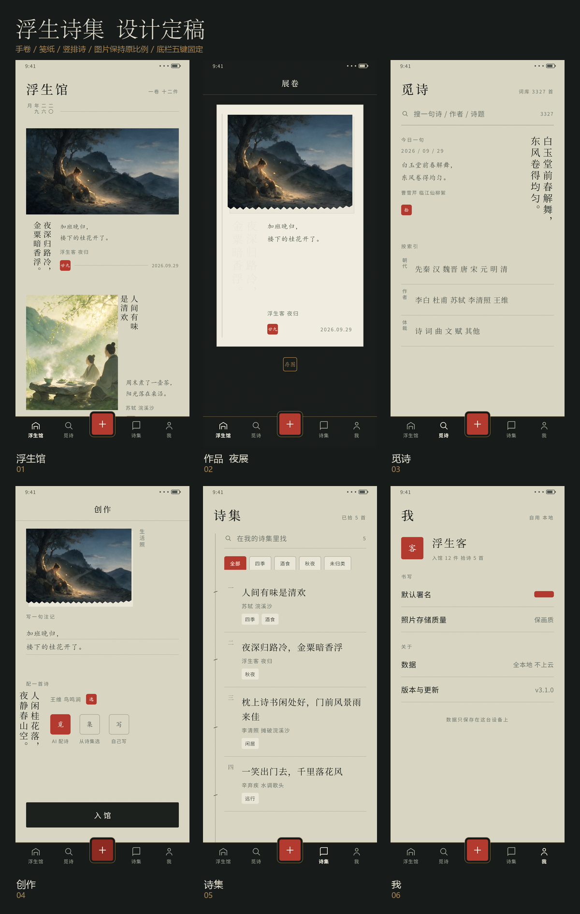
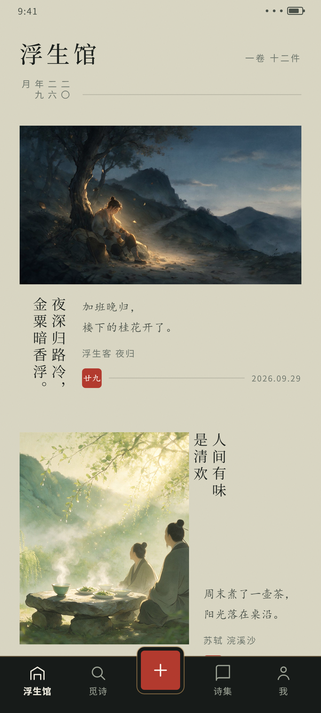
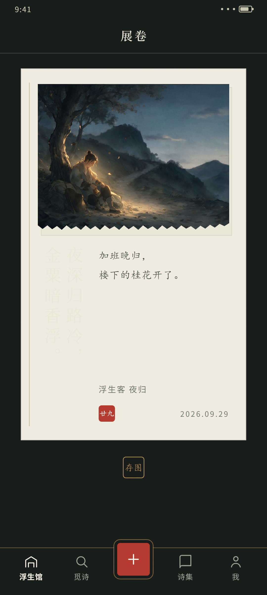
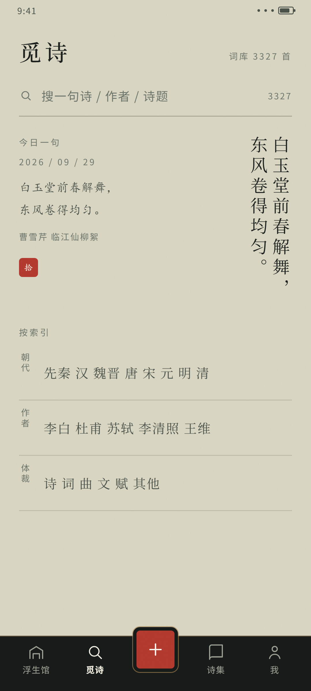
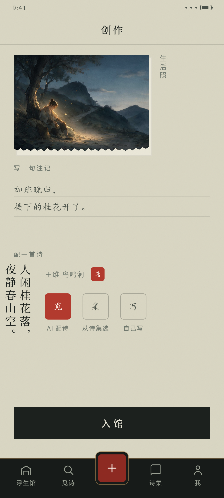
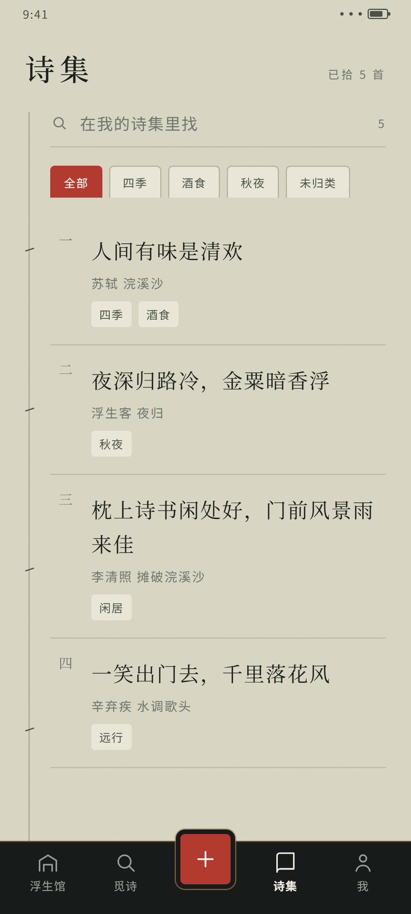
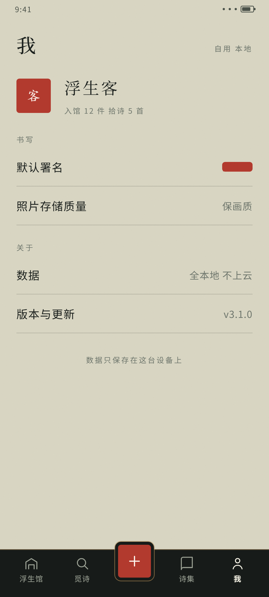
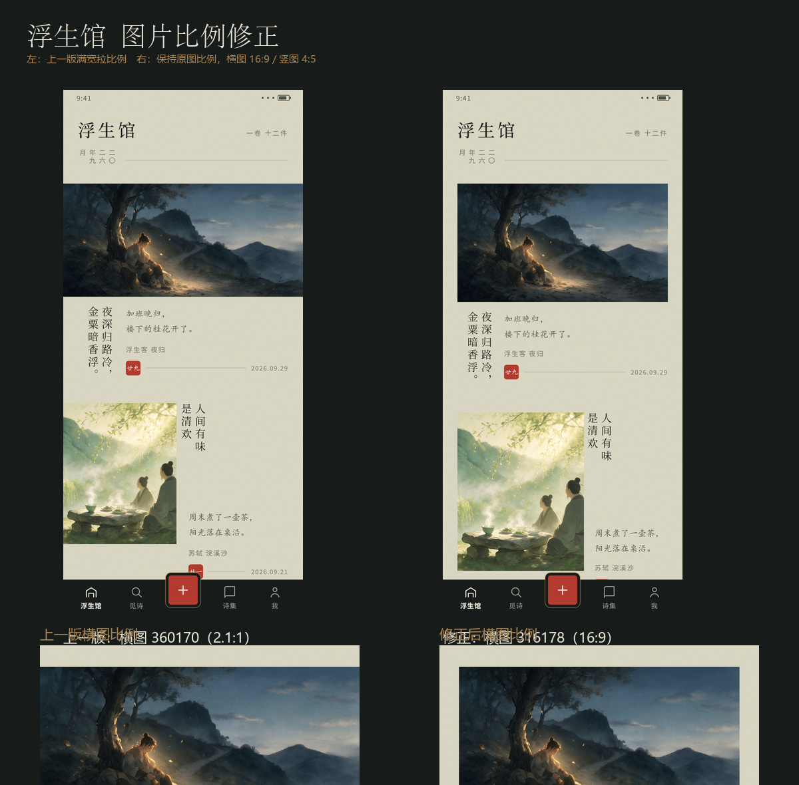
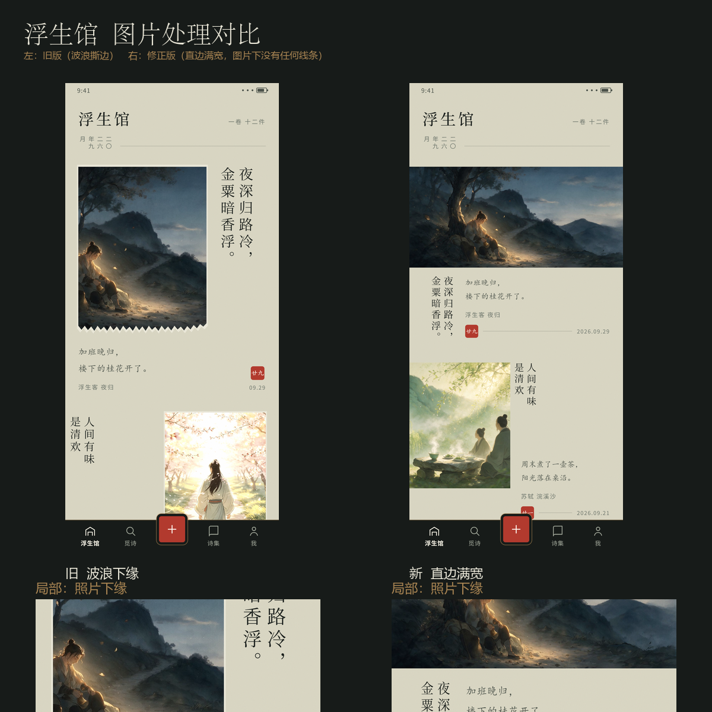

《浮生诗集》Android 设计定稿
版本：v1.0 定稿
日期：2026-09-30
适用：Android / Jetpack Compose / 全本地 / 单用户私人应用
核心概念：展卷
锁定项：底部五键（浮生馆 / 觅诗 / ＋ / 诗集 / 我），名称、顺序、形态不可更改。
0. 一句话定稿
把 App 做成一卷可以展开的私人手卷：
- 照片是书页上的图版；
- 诗是竖排墨字；
- 注记是旁批小楷；
- 日期、署名、选中状态是朱砂小印；
- 底部五键是深墨木轴；
- 交互全部是 Android 常规操作，不发明新东西。
1. 设计定稿依据
1.1 前几版失败的原因
- 第一版把作品做成白卡片列表：白底 + 圆角 + 软阴影，视觉上是通用信息流，不是私人诗集。
- 第二版开始套茶青底 + 朱砂 + 宋体 + 大留白：元素对了，但仍是完成清单，不是从实物出发。
- 第三版加有机圆角 / 流体轮廓：没有物理依据，圆角变成装饰，反而更像模板。
- 第四版展卷概念成立，但没有处理好照片：横图被强行裁成竖图，照片下缘加波浪撕边，像日报撕口。
- 第五版去掉波浪后，又出现图片比例被拉成 2.1:1、竖图过窄的问题。
1.2 本定稿的核心判断
- 不是把卡片换个颜色，而是不用卡片。
- 不是把所有照片塞进一个框，而是按原图方向决定版式。
- 不是给图片加装饰边，而是让图与纸的留白自然分层。
- 不是靠动效和阴影制造层次，而是靠纸色、墨色、竖排、印章和呼吸感。
1.3 不变项
- 底部五键固定。
- 所有操作遵循常规 Android 习惯：上下滚动、点按、返回、搜索、底栏切换、系统相册、系统分享/保存。
- 全本地：无账号、无云同步、无社交、无推荐、无推送。
- 能力清单一个不少。
2. 信息架构
2.1 底部五键
| 位置 | 名称 | 形态 | 语义 |
|---|
| 1 | 浮生馆 | 图标 + 文字 | 作品陈列与回看 |
| 2 | 觅诗 | 图标 + 文字 | 找诗与读诗 |
| 3 | ＋ | 纯加号图形，无文字 | 进入创作 |
| 4 | 诗集 | 图标 + 文字 | 收藏的诗 |
| 5 | 我 | 图标 + 文字 | 设置与个人 |
2.2 入口内部层级
- 浮生馆
- 一级：作品流，按月分组。
- 二级：作品详情（大图、诗、注记、署名、导出图片）。
- 觅诗
- 一级：搜索 + 今日一句 + 按索引浏览。
- 二级：搜索结果、索引列表、诗详情（全文 / 译 / 注 / 赏 / 拾）。
- ＋ 创作
- 一级：创作台，按照片 注记 配诗 入馆顺序。
- 配诗模式：AI 配诗（贴意 / 豪放 / 婉约）、从诗集选、自己写（可补全残句）。
- 诗集
- 一级：我的收藏，搜索 / 标签筛选 / 整理。
- 二级：诗详情（标签、译文、注释、赏析、移出诗集）。
- 状态：整理模式（批量打标签、批量移出）。
- 我
- 一级：默认署名、照片存储质量、数据本地、版本与更新。
2.3 核心流程
生活瞬间
点 ＋ 创作
拍照 / 从相册选图
写一句注记
配诗：AI 配诗（贴意 / 豪放 / 婉约）
或 从诗集选
或 自己写（可补全残句）
入馆
浮生馆陈列
2.4 能力覆盖表
| 能力 | 定稿位置 |
|---|
| 记录生活瞬间 | ＋ 创作 拍照 / 相册 |
| 写一句生活描述 | ＋ 创作 注记 |
| AI 配诗 | ＋ 创作 AI 配诗，三种风格 |
| 自己挑一首 | ＋ 创作 从诗集选 |
| 自己写 / 补全残句 | ＋ 创作 自己写 |
| 收进私人文集 | ＋ 创作 入馆；浮生馆 |
| 翻看作品 | 浮生馆 作品流 / 作品详情 |
| 找一首诗 | 觅诗 搜索 / 朝代 / 作者 / 体裁 |
| 管理收藏诗 | 诗集 搜索 / 标签 / 整理 / 移出 |
| 读一首诗 | 诗详情 全文 / 译文 / 注释 / 赏析 |
| 打标签、按标签筛 | 诗集 标签筛选；诗详情 加标签 |
| 导出作品为图片 | 作品详情 存为图片 |
| 图片质量档 | 我 照片存储质量（省空间 / 保画质） |
| 署名 | 我 默认署名 |
3. 视觉语言
3.1 概念
手卷 / 笺纸 / 竖排诗 / 朱砂印 / 木轴底栏。
- 页面不是卡片列表，而是纸面。
- 作品不是item，而是一张笺。
- 图片不是Card 里的 Image，而是纸上的图版。
- 元信息不是右侧灰色小字，而是落款和印。
3.2 颜色令牌
| Token | 色值 | 使用规则 |
|---|
| Paper 纸 | #D9D6C3 | 全局背景、滚动容器 |
| PaperHi 笺 | #EAE7D8 | 卷面、纸片、书页、浮层 |
| PaperDeep 旧纸 | #C8C5B0 | 辅助底色、书页阴影层 |
| Ink 墨 | #1C211E | 主文字、主按钮、图标激活态 |
| Ink2 次墨 | #4A5149 | 注记、次级正文、标签文字 |
| Ink3 元信息 | #6F776D | 日期、出处、占位、未激活底栏 |
| Seal 朱砂 | #B33A2E | 印章、加号、选中重点 |
| SealDeep 深朱砂 | #8E2A22 | 按下态、破坏性操作 |
| Gold 旧金 | #A88452 | 木轴细线、极小面积重点 |
| Night 夜墨 | #171B19 | 木轴底栏、作品夜展背景 |
| Line 发丝线 | rgba(28,33,30,0.14) | 分隔线、输入底线 |
| LineStrong 强线 | rgba(28,33,30,0.26) | 按钮描边、书签边 |
| NightLine 夜线 | rgba(234,231,216,0.16) | 夜展页分隔线 |
朱砂规则：一屏最多一个朱砂重点。
例如：底栏加号 + 选中印章；或日期印 + 选中印章。不要同时出现三个以上朱砂元素。
3.3 字体与字阶
| 名称 | 字号 | 行高 | 字重 | 字体 | 用途 |
|---|
| Masthead | 26sp | 35sp | 500 | 宋体 / Noto Serif SC | 页面大题 |
| PoemVerticalXL | 24sp | 31sp | 400 | 宋体 | 作品夜展竖排诗 |
| PoemVertical | 20sp | 26sp | 400 | 宋体 | 浮生馆竖排诗 |
| PoemList | 1718sp | 28sp | 400 | 宋体 | 列表诗句 |
| Note | 15sp | 28sp | 400 | 楷体 / LXGW WenKai | 注记、译文 |
| NoteSmall | 13sp | 23sp | 400 | 楷体 | 卡片内注记、摘录 |
| Body | 14sp | 22sp | 400 | 黑体 / Noto Sans SC | 搜索、输入、设置 |
| Label | 12sp | 18sp | 500 | 黑体 | 区块标题、标签 |
| Meta | 1011sp | 1517sp | 400 | 黑体 | 出处、日期、叶码 |
| Button | 15sp | 22sp | 500 | 黑体 | 主按钮，字距 0.32em |
竖排诗规则：
- 行序从右到左，字序从上到下。
- 字距 0.18em，行距 1.281.3。
- 一首诗最多显示两列 focus line；更长则进入诗详情。
- 标点在行内占一个字位，不单独换行。
3.4 间距阶梯
4 / 8 / 12 / 16 / 20 / 24 / 32 / 40 / 52 / 64 dp
- 页面左右：22dp。
- 版心宽度：316dp（360 - 222）。
- 区块之间：32dp。
- 作品之间：2428dp。
- 月份分隔：上 18dp / 下 14dp。
- 列表条目上下：1516dp。
- 底栏高度：64dp + 系统手势区。
3.5 形状与材质
- 图片：直角。 无圆角、无描边、无投影、无下垫纸。
- 纸片 / 笺纸：直角 + 纸纤维噪点。
- 印章：方印 46dp 小圆角，圆印为 50%。
- 按钮：墨条 2dp 圆角；次按钮直角 / 细描边。
- 搜索框：不是圆角盒子，是一条 48dp 高的墨线搜索行。
- 全局无阴影。 没有 elevation、没有 blur、没有卡片投影。
- 纸纤维： 140140 的噪点纹理，透明度 0.05 左右，
BlendMode.Multiply。
3.6 图标与动效
- 图标：22dp，1.5dp 描边，圆角端点，线性风格。
- 激活：PaperHi / Paper 对比色；未激活：
#9AA093（夜底栏）。
- 动效：只保留系统默认的点击 ripple、页面返回、键盘弹出。
- 不添加：转场炫技、呼吸灯、红点、角标、Toast、引导气泡、长按菜单。
4. 照片存放定稿规则（本次重点）
4.1 总原则
照片保持原图方向与比例，不为了版式好看去裁剪或拉伸。
版式根据照片是横图、竖图还是方图来变化，而不是让照片去适应一个固定框。
4.2 不做的事
- 不在图片下缘加波浪线、撕纸边、裱纸边、装饰线。
- 不给图片加圆角、投影、边框。
- 不把横图强行裁成竖图。
- 不把竖图强行拉成横图。
- 不把图片满宽拉伸成 2:1 或更扁的装饰条。
4.3 横图（宽高比 1.2）
- 容器宽度 = 版心 316dp。
- 高度 = 316 / 原图比例。
- 例：
- 16:9 316 178dp
- 3:2 316 211dp
- 4:3 316 237dp
- 如果原图比例超过 2.2:1（极宽全景），显示比例封顶 2.2:1，高度 144dp；此时允许轻微居中裁剪，避免出现一条太薄的图片。
- 版式：图片在版心内，下面进入文字区。文字区分两栏：
- 左：竖排诗；
- 右：注记、出处、日期印。
4.4 竖图（宽高比 < 1.2）
- 容器宽度 = 190dp。
- 高度 = 190 / 原图比例。
- 例：
- 4:5 190 238dp
- 3:4 190 253dp
- 2:3 190 285dp
- 如果高度超过 280dp（例如 9:16），以高度 280dp 为上限，宽度按比例反推，例如 9:16 158 280dp。
- 版式：图片靠左；右侧留出竖排诗、注记、出处、日期印。
- 图片和文字之间只有 16dp 留白，没有分隔线。
4.5 方图（宽高比 0.91.1）
- 统一按 240 240dp 处理。
- 右侧放竖排诗与注记，结构同竖图。
4.6 图片处理
- 色彩：
sepia(0.05) saturate(0.9) contrast(1.02) 的极轻旧色处理。
- 不裁切纹理、不加水墨边框、不加纸边。
- 图片本身无边框、无圆角、无阴影；点击热区为完整图片区域，最小 48dp。
- 点击用系统 ripple，颜色
Ink.copy(alpha = 0.08f)。
4.7 不同位置的图片容器
| 位置 | 容器规则 |
|---|
| 浮生馆 横图 | 版心 316dp 宽，按比例 |
| 浮生馆 竖图 | 190dp 宽，按比例 |
| 作品夜展 横图 | 卷面内宽 260dp，按比例；16:9 260146dp |
| 作品夜展 竖图 | 卷面内宽 190dp，按比例 |
| 创作预览 | 固定 218158dp 编辑框，ContentScale.Crop，仅作预览，不是最终展陈比例 |
5. 页面布局规格
5.1 浮生馆
一级：作品流
- 顶部 Masthead：高约 70dp，标题浮生馆26sp，右侧一卷 N 件10sp。
- 月份分隔：左侧竖排
二〇二六年九月，右侧 1dp 发丝线；上 18dp / 下 14dp。
- 横图作品：
- 图片 316178dp（16:9 示例）；
- 图片下 14dp 进入文字区；
- 左：竖排诗，宽约 54dp，20sp；
- 右：注记 13sp 楷体、出处 10sp、日期印 22dp；
- 作品底部留 2428dp。
- 竖图作品：
- 左：竖图 190238dp（4:5 示例）；
- 右：竖排诗 1620sp；下方注记、出处、日期印；
- 图片与文字间距 16dp；作品底部留 24dp。
- 整页无卡片、无列表分割线，仅靠版心和留白分段。
二级：作品详情 / 夜展
- 背景
Night #171B19，状态栏文字 PaperDeep。
- 顶栏 48dp：返回 `` + 居中小字展卷。
- 卷面：宽 304dp，
PaperHi 底，直边；左侧 1px 旧金细线。
- 卷面内边距：20dp。
- 图片：卷面内宽 260dp，按原图比例；上下留 18dp。
- 诗：竖排，24sp。
- 注记：楷体 15sp；出处 11sp；日期印。
- 底部：旧金色存图小印，居中。
5.2 觅诗
- Masthead：觅诗26sp，右侧词库 3327 首。
- 搜索行：高 48dp，底部 1dp 墨线；左侧放大镜 16dp；占位搜一句诗 / 作者 / 诗题；右侧3327。
- 今日一句：
- 左侧日期 10sp、注记 14sp、出处 10sp、圆形拾印；
- 右侧竖排诗 20sp，最多两列。
- 按索引：
- 三行，每行 64dp；
- 左侧竖排类目朝代 / 作者 / 体裁；
- 中间横排示例值；
- 右侧 ``。
- 搜索结果：横排大字号诗句 1718sp，右侧 32dp 圆钮拾。
- 诗详情：
- 标题 20sp，作者/朝代 11sp；
- 正文 20sp，行高 2.05；
- 圆钮译 / 注 / 赏 / 拾40dp；
- 译文/注释/赏析用楷体 14sp，展开在下方；
- 底部主按钮拾入诗集52dp。
5.3 ＋ 创作
- 顶栏 48dp：返回 + 创作。
- 照片：
- 预览框 218158dp，4:3 编辑框，
ContentScale.Crop；
- 有图时右下角重选；
- 无图时虚线框 + 朱砂圆＋。
- 注记：
- 标题写一句注记12sp；
- 笺纸输入框，最小高 92dp，楷体 15sp，行高 1.85；
- 占位示例比如：加班晚归，楼下的桂花开了。
- 配诗：
- 模式方印三枚：
觅（AI 配诗）、集（从诗集选）、写（自己写），42dp 方印；
- AI 模式：风格签
贴意 / 豪放 / 婉约，右侧文字按钮换一换；
- 建议块：竖排诗句 18sp + 出处 + 圆形选；
- 从诗集选：诗集列表，点击选中；
- 自己写：标题、作者、诗句输入 + 次按钮补全残句。
- 主按钮：墨条入馆，52dp，字距 0.32em。
5.4 诗集
- Masthead：诗集26sp + 右侧已拾 N 首。
- 搜索行：高 42dp，占位在我的诗集里找。
- 标签书签：横向滚动，高 2830dp，形状是书签式矩形，顶部圆角 4dp，底边贴线；选中为朱砂底。
- 诗叶：
- 左侧竖排叶码一、二、三；
- 中间诗句 18sp，出处 11sp，小标签；
- 无卡片，只有纸面和细线。
- 诗详情：
- 全文 + 圆钮
译 / 注 / 赏；
- 标签区可加/删标签；
- 底部移出诗集破坏性操作，
SealDeep。
- 整理模式：
- 右上角整理进入；
- 行左侧出现 32dp 圆形选择点；
- 底部操作条打标签 / 移出诗集；
- 不使用长按菜单。
5.5 我
- Masthead：我26sp + 右侧自用 本地。
- 个人：
- 4648dp 朱砂方印客；
- 22sp 宋体浮生客；
- 10sp入馆 12 件 拾诗 5 首。
- 设置组：
- 书写：默认署名（值可点开编辑）、照片存储质量（省空间 / 保画质）；
- 关于：数据（全本地 不上云）、版本与更新（v3.1.0）。
- 底部：10sp数据只保存在这台设备上。
- 不出现：账号、云同步、社交、关注、排行榜、推送。
6. 组件规格
6.1 底栏木轴
- 高度：64dp + 手势安全区。
- 背景：
Night #171B19。
- 顶线：1dp
Gold，透明度 50%。
- 槽位：5 个等宽。
- 图标：22dp，1.5dp 描边。
- 文字：10sp，字距 0.06em；未激活
#9AA093，激活 PaperHi，字重 600。
- 中间加号：
- 5252dp 方印，8dp 圆角；
- 背景
Seal #B33A2E；
- 外圈 4dp
Night 描边；
- 最外层 1dp
Gold 细线，透明度 65%；
- 加号图形 22dp，颜色
#FFF8F1，无文字。
6.2 作品叶
- 结构：图片 竖排诗 / 注记 / 出处 / 日期印。
- 图片：按第 4 章比例规则；直角、无边框、无投影。
- 竖排诗：20sp，行距 1.28，字距 0.18em。
- 注记：1315sp 楷体，行高 1.751.85，
Ink2。
- 出处：1011sp 黑体，字距 0.13em，
Ink3。
- 日期印：22dp 方印，
Seal 底，#FFF8F1 字。
- 作品间距：2428dp。
6.3 列表条目
- 上下 1516dp；底部 1dp
Line。
- 诗句：1718sp 宋体，单行省略。
- 出处：1011sp 黑体，
Ink3。
- 右侧圆钮：32dp 圆，1dp
LineStrong，单字 13sp 宋体。
- 已收藏：墨色填充，纸色单字。
6.4 搜索行
- 高 48dp；底部 1dp
LineStrong；透明背景。
- 放大镜 16dp；输入 14sp；占位
Ink3。
- 焦点：底线变
Ink，不出现高亮阴影。
6.5 按钮
- 主按钮入馆 / 存为图片：高 52dp，
Ink 底，PaperHi 字，15sp，字距 0.32em，2dp 圆角，无阴影。
- 次按钮：高 40dp，透明底，1dp
LineStrong，13sp，2dp 圆角。
- 文字按钮：12sp，
Ink2，用于换一换整理。
6.6 圆钮
- 40dp 圆，1dp
LineStrong，单字 14sp 宋体。
- 用于译 / 注 / 赏 / 拾。
- 激活：边框和文字
Seal，可用浅朱砂底。
6.7 印章
- 方印：22/30/42/48dp，5dp 圆角，
Seal 底，#FFF8F1 字。
- 圆印：50% 圆，用于拾 / 选。
- 金印：透明底，1dp
Gold 描边，Gold 字，用于存图。
- 朱砂面积一屏不超过 5%。
6.8 标签 / 书签
- 顶部筛选：书签式，高 2830dp，顶部 4dp 圆角，底边贴线。
- 选中：
Seal 底，纸色字。
- 小标签：20dp 高，10sp，
PaperHi 底，Ink2 字。
- 新建标签：点击
＋ 打开标准底部抽屉，输入名称，可复用已有标签。
6.9 输入框 / 笺纸
- 单行输入：48dp，
PaperHi 底，1dp Line，4dp 圆角。
- 注记笺纸：最小 92dp，楷体 15sp，行高 1.85，底部可有极淡横线。
- 聚焦只改边框颜色，不出现 elevation。
6.10 空状态
- 居中，可有一枚 54dp 朱砂描边圆 + 单字。
- 文案：楷体 15sp，
Ink2，例如还没有拾诗 / 去觅诗里找一句。
- 可有一个次按钮去觅诗。
- 不放插画、不放引导气泡、不放营销位。
6.11 对话框 / 底部抽屉
- 对话框：标准
AlertDialog；PaperHi 底；8dp 圆角；标题 17sp；正文 14sp Ink2；破坏性操作 SealDeep。
- 底部抽屉：顶部 16dp 圆角；324dp 拖拽条；左右 24dp；用于标签、图片质量、署名编辑。
- 遮罩：
rgba(23,27,25,0.28)，无水波纹、无 blur。
7. 交互规则
- 所有页面使用系统返回手势 / 返回键。
- 主页面用底部五键切换；二级页显示返回箭头。
- 列表用上下滚动；竖排诗不是横向滑动，仍随页面上下滚动。
- 图片点击进入作品详情；诗行点击进入诗详情。
- 收藏用圆形单字按钮，不用长按菜单。
- 删除用二级页按钮或整理模式，不用左滑删除，避免误触。
- 所有可点元素最小 48dp 热区。
- 不使用 Toast、红点、角标、引导气泡。
8. 状态与边界
| 场景 | 处理 |
|---|
| 浮生馆为空 | 朱砂圆 + 还没有入馆的浮生 + ＋ 记录这一刻 |
| 诗集为空 | 楷体还没有拾诗 / 去觅诗里找一句 + 去觅诗 |
| 搜索无结果 | 没有找到，换一句试试，不显示空卡片 |
| 本地数据不可用 | 静默降级：显示空状态，不弹错误弹窗 |
| 图片比例极端 | 横图封顶 2.2:1，竖图封顶 280dp 高，轻微裁剪 |
| 注记太长 | 列表/作品叶最多 3 行，详情页全文显示 |
| 诗太长 | focus line 竖排最多两列，全文进诗详情 |
| AI 不可用 | 保留从诗集选 / 自己写，AI 区只显示一行安静提示 |
| 键盘弹出 | 输入框自动上移，底栏不遮挡输入；优先使用系统 imePadding |
| 暗色夜展页 | 只有作品详情使用 Night 背景，其余页面保持纸色 |
9. 术语表
| 词 | 含义 | 是否保留 |
|---|
| 浮生馆 | 作品陈列入口 | 锁定 |
| 入馆 | 把作品收进浮生馆 | 保留 |
| 拾 | 收藏一首诗 | 保留 |
| 注记 | 那句生活描述 | 保留 |
| 浮生客 | 默认署名 | 保留 |
| 作品 | 照片 + 注记 + 诗 + 署名 | 保留 |
| 标签 | 用户自定义分类 | 保留 |
| 整理 | 批量管理诗集 | 新增界面词，但不新增能力 |
10. Jetpack Compose 落地建议
10.1 结构
Scaffold(bottomBar = { BottomRoller() })。- 五个一级页面：
LazyColumn + contentPadding(bottom = 64.dp + navInset)。
- 二级页：
Scaffold + TopAppBar（无阴影、透明底）+ 返回。
- 底栏使用
Box + Row，加号用 offset(y = (-18).dp) 浮起。
10.2 照片比例
- 用
remember / derivedStateOf 从图片宽高算出 ratio = width / height。
- 横图：
Modifier.width(316.dp).aspectRatio(ratio)；极端比例封顶 2.2。
- 竖图：
Modifier.width(190.dp).aspectRatio(ratio)；高度超过 280dp 时以高度为准。
- 方图：
Modifier.size(240.dp)。
- 图片统一
contentScale = ContentScale.Crop，容器已经按原图比例计算，因此正常情况不裁切。
- 禁止：
Card、RoundedCornerShape、shadow、border 用在展陈图片上。
10.3 竖排诗
Compose 没有原生纵排 API，建议：
- 短句（focus line，16 字）：把每句拆成字符
Column，再把多列放进一个 Row(layoutDirection = LayoutDirection.Rtl)。
- 每字一个
Text 或一个 BasicText。
- 字距、行距按 3.3 节。
- 长诗（诗详情）：用
TextMeasurer + Canvas 自绘纵排，或封装 VerticalCJKText composable，按字逐个 drawText 到列坐标。
- 阅读顺序：列从右到左，字从上到下。
- 竖排诗区域本身不参与横向滑动；整个页面仍上下滚动。
10.4 字体
- 宋体：建议内置
Noto Serif SC（OFL 许可）。
- 楷体：Android 不保证有楷体，建议内置
LXGW WenKai（OFL 许可）或等价开源楷体。
- 正文/元信息：
Noto Sans SC。
- 不依赖设备是否内置宋体/楷体。
10.5 图片处理
- 旧色滤镜用
ColorMatrix：轻微降饱和、轻微偏暖。
- 如果实现成本高，可以用一层
Color(0x0FD9D6C3) 叠加 + 默认图片；
- 照片禁止
clip(RoundedCornerShape)、禁止 shadow、禁止自绘下缘装饰线。
10.6 数据与本地
- Room：
poems、exhibits、tags、poem_tags。
- 搜索：Room FTS4/FTS5，索引
title、author、content、focus_line。
- 图片：应用私有目录；导出图片写
MediaStore 的 Pictures/浮生诗集。
- 设置：DataStore；字段
pen_name、image_quality。
- AI：本地模型或本地服务，不接云账号；不可用时安静降级。
10.7 动效
- 只使用系统默认的点击 ripple、页面转场、键盘动画。
- 不添加自定义粒子、缩放、呼吸、共享元素。
- 作品夜展进入时用系统标准的
fadeIn 或默认转场即可。
11. 验收清单
- [ ] 底部五键名称、顺序、形态不变，加号无文字。
- [ ] 所有页面为纸色底，没有白卡片 + 圆角 + 阴影。
- [ ] 浮生馆横图按 16:9 等原比例；竖图按 4:5 等原比例；图片下缘无任何线条。
- [ ] 竖排诗阅读顺序正确：列从右到左，字从上到下。
- [ ] 朱砂一屏最多一个重点。
- [ ] 觅诗可搜诗句 / 作者 / 诗题；可按朝代 / 作者 / 体裁浏览。
- [ ] 诗集可搜索、可标签筛选、可整理批量打标签和移出。
- [ ] 诗详情有全文、译文、注释、赏析。
- [ ] 创作按照片 注记 配诗 入馆；AI 三种风格、从诗集选、自己写、补全残句都存在。
- [ ] 作品详情可存为图片。
- [ ] 我可改署名、切换省空间 / 保画质。
- [ ] 全本地，无账号、无社交、无云同步、无推送。
12. 文件清单
视觉稿总览_定稿.png：总览。视觉稿/01-浮生馆.png：浮生馆定稿。视觉稿/02-作品夜展.png：作品详情。视觉稿/03-觅诗.png：觅诗。视觉稿/04-创作.png：创作。视觉稿/05-诗集.png：诗集。视觉稿/06-我.png：设置。视觉稿/07-图片比例对比.png：旧版比例问题与修正。视觉稿/08-图片处理对比.png：图片下缘处理对比。实现参考/：HTML / CSS / 示例图片。设计定稿.md：本文件。
13. 设计逻辑
- 先有实物，再有界面。 手卷、笺纸、线装书、印章决定了版式，而不是先画五个页面再补风格。
- 竖排诗是灵魂。 古诗本来就从右到左、从上往下读；竖起来之后，App 不再是通用信息流。
- 图片按原方向、原比例放置。 横图有横图的版式，竖图有竖图的版式，不为了整齐去裁剪；照片下缘不加任何装饰线。
- 朱砂只做印。 加号、日期、选中状态，一屏最多一个重点，所以每次出现都重要。
- 常规操作，非常规视觉。 上下滚动、点按、返回、底栏切换全部是老习惯；变化的是纸、墨、竖排、印章和展陈方式。
附录：视觉稿

视觉稿总览
浮生馆
作品夜展
觅诗
创作
诗集
我
图片比例对比
图片处理对比